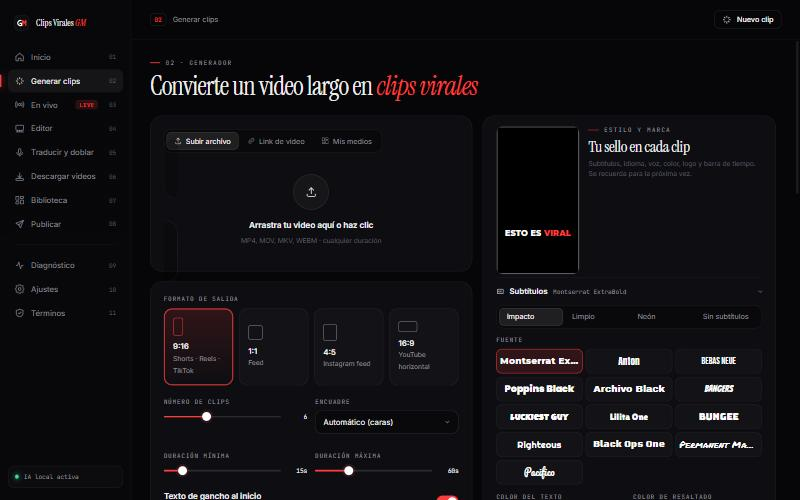
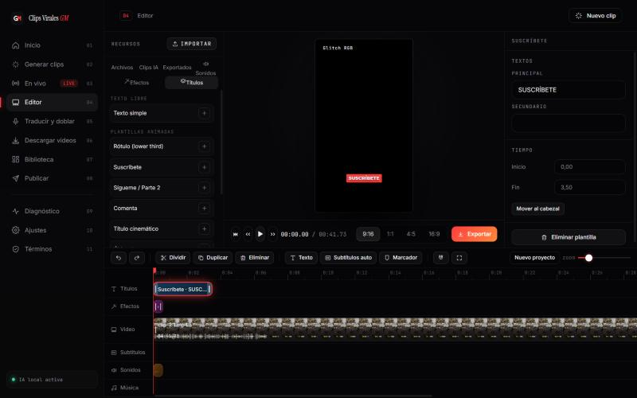
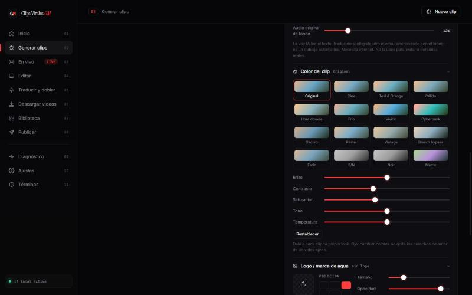

Convierte videos largos en clips verticales listos para TikTok, Reels y Shorts. Subtítulos en cualquier idioma, doblaje con voz IA, editor profesional, efectos y sonidos sin copyright, descargador en máxima calidad y estrategia de publicación para cada red. Todo en tu propio PC.

Transcribe, encuentra los momentos con más gancho, encuadra las caras en 9:16 y añade subtítulos animados palabra por palabra.
La IA local traduce subtítulos y ganchos. 13 fuentes libres, color del texto y del resaltado.
Dobla el video completo a otro idioma con voces neuronales sincronizadas con los tiempos originales.
Efectos sobre la voz original (grave, robot, radio, eco…) o un narrador con voz IA.
Logo PNG con posición, tamaño y opacidad, 16 looks de color y barra de tiempo que avanza con el video.
Graba tu directo, pantalla o cámara y guarda los últimos 15, 30 o 60 segundos con una tecla.
Pega el link y descarga en la mejor calidad disponible, en 1080p, en MP4 compatible o solo audio.
Analiza el video, detecta el nicho y crea título, texto, hashtags, CTA y horarios para cada red.
Sube a YouTube Shorts, TikTok, Reels y Facebook, y revisa con un clic qué funciona en la app.
Recuerda tu canal, tus estilos y proyectos, aprende lo que más usas y busca entre todos tus recursos. La IA edita siguiendo tus reglas.
Mira en vivo cada video que se está procesando, su progreso y tiempo, y cancela lo que no necesites.
Automático con caras, seguir una cara, centro fijo sin movimiento o el video completo con fondo difuminado.


Elige entre 16 estilos de color o ajusta brillo, contraste, saturación, tono y temperatura. Añade tu logo y una barra de progreso. La configuración se recuerda para el siguiente video.
Es una aplicación de escritorio de uso personal: los videos se procesan en el PC y no se suben a ningún servidor. Necesita internet solo para voces IA, descargas y publicar.
Usa solo contenido propio, con licencia o con permiso. Cambiar colores, voz o idioma no elimina los derechos de un video ajeno.
No se deben usar para suplantar a personas reales. Marca el contenido generado con IA cuando la plataforma lo pida.
Sin analítica ni rastreo. Videos, tokens y ajustes se quedan en el computador del usuario.
Sonidos: Pixabay Content License y CC0. Fuentes: SIL Open Font License y Apache 2.0. Software: FFmpeg, faster-whisper, Ollama, OpenCV, yt-dlp, edge-tts y FastAPI. Política de privacidad del ecosistema: diego-gasca.vercel.app/privacidad.html